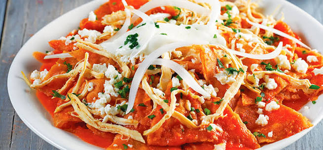
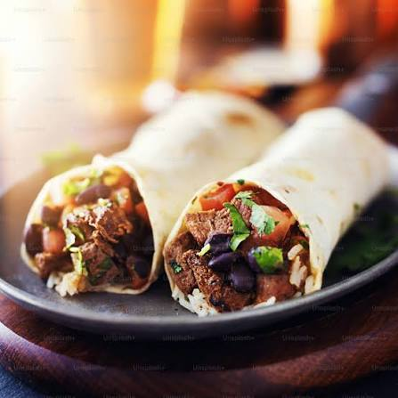
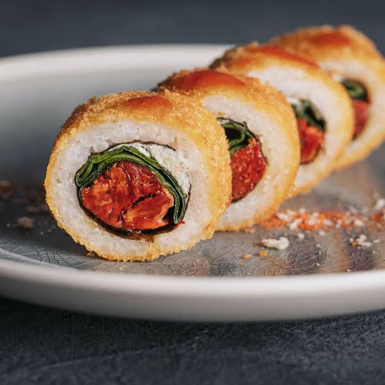
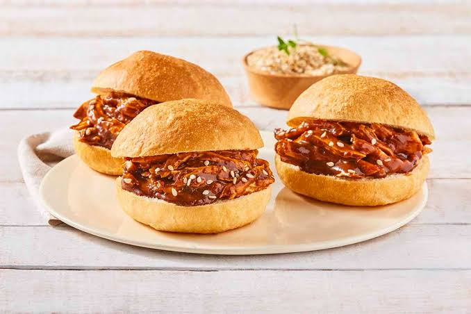
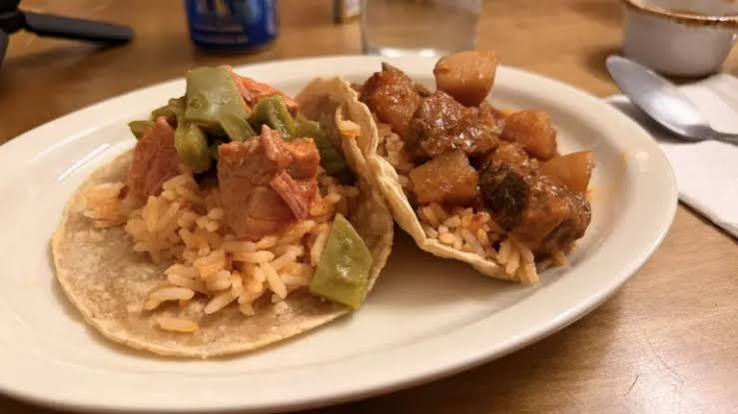
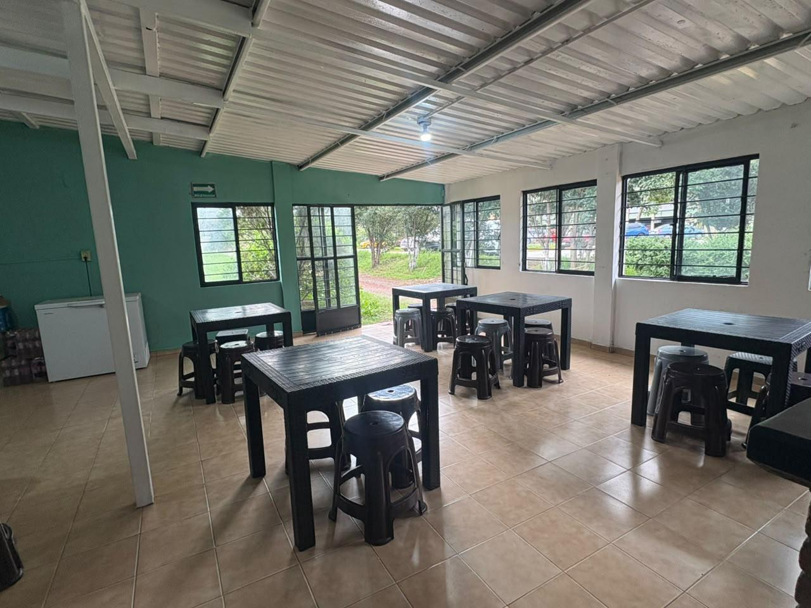

Cafetería Institucional
¡Tu punto de encuentro y recarga de energía dentro del plantel! Te ofrecemos deliciosos desayunos, almuerzos y menús especiales todos los días para que continúes tus clases con toda la energía.
Ver Menú del Día

Sobre la Cafetería
Nos dedicamos a ofrecer alimentos higiénicos, balanceados y accesibles para toda la comunidad estudiantil, personal docente y administrativo del CECyTEM Plantel La Paz.
Nuestro Menú Digital
Explora nuestras variedades de alimentos y bebidas disponibles para ti.
Alimentos

Comida Corrida
Sopa, arroz, guisado, frijoles y postre.

Chilaquiles (Lunes)
Especial del día lunes.


Burritos de Suadero y Sushi (Martes)
Especial del día martes.

Hojaldras de Mole (Miércoles)
Especial del día miércoles.

Tacos de Guisado (Jueves)
Especial del día jueves.
Menú Especial (Viernes)
Especial de fin de semana.
Bebidas
Horarios de Atención
Te esperamos durante toda la jornada escolar con desayunos calientes y comida corrida desde temprano.
Turno Matutino
Horario:
7:00 AM - 1:20 PM
Te esperamos para comenzar tu día.
Turno Vespertino
Horario:
1:20 PM - 7:00 PM
Disfruta de nuestros alimentos por la tarde.
Lunes a Viernes: 7:00 AM - 4:00 PM, servicio general de cafetería.
¿Dónde estamos?
Nos encontramos dentro de las instalaciones escolares, en la zona norte del plantel, siguiendo el pasillo central cruzando el Arco-Techo.

Nuestras Instalaciones
Un espacio amplio, limpio y cómodo para disfrutar tus alimentos en compañía de tus compañeros.

¿Quiénes somos?
La Cafetería Escolar es un espacio dentro de nuestra institución educativa dedicado a ofrecer alimentos y bebidas a estudiantes, maestros y trabajadores.
¿Cuál es su función?
Su función principal es proporcionar un servicio de alimentación durante la jornada escolar, facilitando que los estudiantes y trabajadores puedan adquirir alimentos sin salir de las instalaciones de la escuela.
Beneficios para los estudiantes
- Acceso a alimentos durante el recreo.
- Disponibilidad de diferentes bebidas.
- Ahorro de tiempo al no salir de la escuela.
- Un espacio para convivir con sus compañeros.
Beneficios para alumnos, maestros y trabajadores
- Facilidad para comprar alimentos.
- Servicio dentro de las instalaciones escolares.
- Opciones de alimentos durante su jornada laboral.
- Atención accesible y cómoda.
Misión, Visión y Valores
Conoce los principios que nos identifican y los objetivos que queremos alcanzar como Cafetería Escolar.
Misión
Ofrecer alimentos y bebidas de calidad, saludables, deliciosos y a precios accesibles para toda la comunidad escolar, brindando un servicio amable, rápido y responsable que contribuya al bienestar y desarrollo de los estudiantes.
Nuestra Visión
Ser una cafetería escolar reconocida por su excelente servicio, calidad e higiene, convirtiéndose en un espacio agradable y confiable. Buscamos crecer, innovar y promover hábitos de alimentación saludable dentro de nuestra comunidad educativa.
Nuestros Valores
- Responsabilidad: Cumplir con nuestros compromisos.
- Respeto: Tratar bien a todos los clientes.
- Honestidad: Ofrecer productos con transparencia.
- Higiene: Mantener limpias las instalaciones.
- Calidad: Ofrecer alimentos en buenas condiciones.
- Trabajo en equipo: Colaborar para mejorar cada día.
Contáctanos
Déjanos tu mensaje, con gusto te atendemos.
Aviso de Privacidad
Los datos ingresados en este formulario son utilizados únicamente como ejemplo de demostración. Esta página no almacena ni envía información personal.